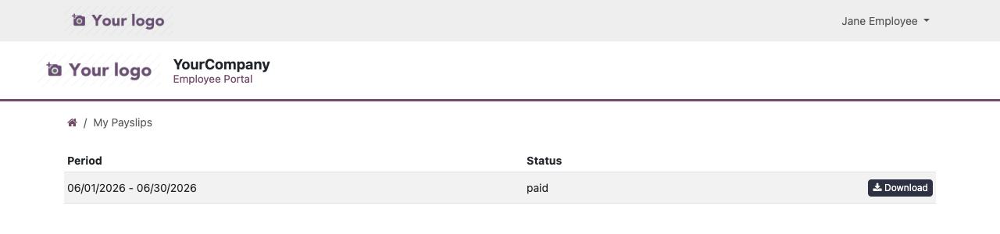

Adds a "My Payslips" page to the Employee & Client Self-Service Portal.

This is an optional add-on for the Employee & Client Self-Service
Portal module. It requires Odoo Enterprise's Payroll app
(hr_payroll) and is kept as a separate module so the base
portal (Profile, Time Off, Attendance, My Team, My Assignments) keeps
installing cleanly on Odoo Community, where Payroll isn't available.
Once installed, employees see a new My Payslips tile on their portal home and dashboard, where they can view and download their finalized (done / paid) payslips as a PDF.
hr_payroll)